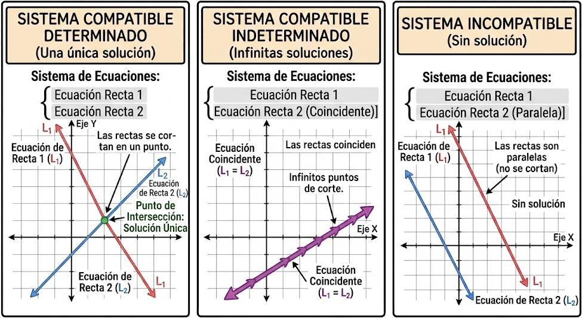

Sistemas de ecuaciones
¿Qué es un sistema de ecuaciones?
Un sistema de ecuaciones es un conjunto de dos o más ecuaciones que deben cumplirse simultáneamente.
Las incógnitas aparecen en varias ecuaciones y buscamos los valores que hacen verdaderas todas las ecuaciones a la vez.
Por ejemplo:
\(\begin{cases} x+y=7\\ 2x-y=5 \end{cases}\)
La solución del sistema es el par de valores \((x,y)\) que cumple las dos ecuaciones.
En este caso:
\(x=4,\qquad y=3\)
porque:
\(4+3=7\)
y
\(2\cdot4-3=5\)
Sistemas de dos ecuaciones con dos incógnitas
Un sistema de dos ecuaciones con dos incógnitas puede escribirse como:
\(\begin{cases} ax+by=c\\ dx+ey=f \end{cases}\)
Las incógnitas (o variables) de los sistemas de ecuaciones suelen ser \(x\) e \(y\), de hecho, en la anterior expresión lo son.
En la anterior expresión, además:
- \(a\), \(b\), \(d\), \(e\) son coeficientes (multiplican a las incógnitas o variables).
- \(c\), \(f\) son los términos independientes ("van solos").
Un sistema puede tener:
- Una única solución.
- Infinitas soluciones.
- Ninguna solución.
Clasificación
Sistema compatible determinado (SCD)
Tiene una única solución.
Ejemplo:
\(\begin{cases} x+y=7\\ 2x-y=5 \end{cases}\)
Solución:
\((x,y)=(4,3)\)
Sistema compatible indeterminado (SCI)
Tiene infinitas soluciones.
Las dos ecuaciones representan la misma condición, aunque puedan aparecer escritas de forma diferente.
Por ejemplo:
\(\begin{cases} x+y=5\\ 2x+2y=10 \end{cases}\)
La segunda ecuación es equivalente a la primera; pues la segunda ecuación es la primera multiplicada por 2. Por tanto, existen infinitos pares \((x,y)\) que cumplen el sistema.
Sistema incompatible (SI)
No tiene ninguna solución.
Por ejemplo:
\(\begin{cases} x+y=5\\ x+y=8 \end{cases}\)
Es imposible que \(x+y\) sea simultáneamente \(5\) y \(8\).
Ecuaciones equivalentes
Dos ecuaciones son equivalentes cuando tienen exactamente las mismas soluciones.
Por ejemplo:
\(2x+4=10\)
y
\(x+2=5\)
son ecuaciones equivalentes, porque ambas tienen como solución:
\(x=3\)
Una ecuación puede transformarse en otra equivalente mediante operaciones que no modifican sus soluciones.
Operaciones que conservan la equivalencia
Podemos:
- Sumar o restar la misma expresión en ambos miembros.
- Multiplicar ambos miembros por un número distinto de cero.
- Dividir ambos miembros entre un número distinto de cero.
Por ejemplo:
\(2x+4=10\)
Restamos 4:
\(2x=6\)
Dividimos entre 2 (la del ejemplo inicial):
\(x+2=5\)
Todas las ecuaciones obtenidas son equivalentes. Todas tienen de solución:
\(x=3\)
Sistemas equivalentes
Dos sistemas son equivalentes cuando tienen exactamente las mismas soluciones.
Podemos transformar un sistema en otro equivalente para conseguir ecuaciones más sencillas de resolver.
Para ello utilizamos las llamadas operaciones elementales entre ecuaciones.
Operaciones elementales
En un sistema podemos:
1. Intercambiar dos ecuaciones
El sistema:
\(\begin{cases} E_1\\ E_2 \end{cases}\)
puede transformarse en:
\(\begin{cases} E_2\\ E_1 \end{cases}\)
Las soluciones no cambian.
Por ejemplo, el sistema:
\(\begin{cases} x+y=7\\ 2x-y=5 \end{cases}\)
Tiene las mismas soluciones que:
\(\begin{cases} 2x-y=5\\ x+y=7 \end{cases}\)
2. Multiplicar una ecuación por un número distinto de cero
Si tenemos:
\(2x+y=5\)
podemos multiplicarla por \(3\):
\(6x+3y=15\)
Las dos ecuaciones son equivalentes (es decir, tienen las mismas soluciones).
3. Sustituir una ecuación por ella misma más un múltiplo de otra
Esta es la operación fundamental del método de reducción.
Por ejemplo:
\(\begin{cases} E_1\\ E_2 \end{cases}\)
podemos hacer:
\(E_2\leftarrow E_2+2E_1\)
Esto significa que sustituimos \(E_2\) por la ecuación que resulta de sumar \(E_2\) y \(2E_1\).
Esta operación mantiene el mismo conjunto de soluciones.
Veámolos en un ejemplo concreto:
\(\begin{cases} x+y=7\\ 2x-y=5 \end{cases}\)
podemos hacer:
\(E_2\leftarrow E_2+E_1\)
Con ello \(E_2\), la segunda ecuación, sería:
\( (x+y)+(2x-y) =7 +5 \)
Que operando sería:
\( 3x = 12 \)
Y en el sistema (que sería equivalente al inicial) quedaría:
\(\begin{cases} x+y=7\\ 3x = 12 \end{cases}\)
Métodos para resolver sistemas
Los principales métodos de resolución son:
- Método de sustitución.
- Método de igualación.
- Método de reducción.
Los tres métodos permiten transformar o resolver el sistema conservando sus soluciones.
1. Método de sustitución
El método de sustitución consiste en despejar una incógnita en una de las ecuaciones y sustituirla en la otra.
Ejemplo
\(\begin{cases} x+y=7\\ 2x-y=5 \end{cases}\)
Despejamos \(y\) en la primera:
\(y=7-x\)
Sustituimos en la segunda:
\(2x-(7-x)=5\)
\(2x-7+x=5\)
\(3x=12\)
\(x=4\)
Ahora sustituimos:
\(y=7-4=3\)
Por tanto:
\(\boxed{x=4,\quad y=3}\)
¿Cuándo es especialmente útil?
Cuando una de las incógnitas aparece con coeficiente 1 o resulta sencilla de despejar.
2. Método de igualación
El método de igualación consiste en despejar la misma incógnita en las dos ecuaciones y después igualar las expresiones obtenidas.
Ejemplo
\(\begin{cases} x+y=7\\ 2x-y=5 \end{cases}\)
Despejamos \(y\) en la primera:
\(y=7-x\)
Despejamos \(y\) en la segunda:
\(−y=5−2x\)
\(y=2x−5\)
Como las dos expresiones son iguales a \(y\):
\(7−x=2x−5\)
\(12=3x\)
\(x=4\)
Entonces:
\(y=7-4=3\)
Por tanto:
\(\boxed{x=4,\quad y=3}\)
¿Cuándo es especialmente útil?
Cuando las dos ecuaciones permiten despejar fácilmente la misma incógnita.
3. Método de reducción
El método de reducción consiste en transformar el sistema mediante operaciones elementales entre ecuaciones hasta conseguir eliminar una de las incógnitas.
No consiste simplemente en sumar o restar ecuaciones. Lo importante es que estamos realizando operaciones elementales que transforman el sistema en otro equivalente.
La idea fundamental es:
\(\boxed{\text{Sistema inicial}\rightarrow\text{sistema equivalente más sencillo}}\)
Ejemplo
\(\begin{cases} 2x+3y=12\\ 4x-y=10 \end{cases}\)
Queremos eliminar \(y\).
Multiplicamos la segunda ecuación por \(3\):
\(12x-3y=30\)
Ahora sumamos la primera ecuación y la nueva segunda:
\((2x+3y)+(12x−3y)=12+30\)
\(14x=42\)
\(x=3\)
Sustituimos:
\(4(3)−y=10\)
\(12−y=10\)
\(y=2\)
Por tanto:
\(\boxed{x=3,\quad y=2}\)
Forma abreviada de la operación
Podemos expresar la operación anterior como:
\(E_2\leftarrow 3E_2\)
y después:
\(E_1\leftarrow E_1+E_2\)
Estas operaciones convierten el sistema en otro equivalente.
Reducción en sistemas de tres incógnitas
Los sistemas de tres ecuaciones y tres incógnitas tienen la forma:
\(\begin{cases} a_1x+b_1y+c_1z=d_1\\ a_2x+b_2y+c_2z=d_2\\ a_3x+b_3y+c_3z=d_3 \end{cases}\)
Para resolverlos mediante reducción, normalmente eliminamos una incógnita para obtener un sistema de dos ecuaciones con dos incógnitas.
Después resolvemos ese sistema y, finalmente, calculamos la tercera incógnita.
Ejemplo
\(\begin{cases} x+y+z=6\\ 2x-y+z=3\\ x+2y-z=2 \end{cases}\)
Primero eliminamos \(x\).
Hacemos:
\(E_2\leftarrow E_2-2E_1\)
Entonces:
\(-3y-z=-9\)
Y:
\(E_3\leftarrow E_3-E_1\)
Entonces:
\(y-2z=-4\)
Obtenemos el sistema equivalente:
\(\begin{cases} x+y+z=6\\ -3y-z=-9\\ y-2z=-4 \end{cases}\)
Ahora resolvemos las dos últimas ecuaciones.
De:
\(y-2z=-4\)
obtenemos:
\(y=2z-4\)
Sustituimos:
\(-3(2z-4)-z=-9\)
\(-6z+12-z=-9\)
\(-7z=-21\)
\(z=3\)
Entonces:
\(y=2(3)-4=2\)
Finalmente:
\(x+2+3=6\)
\(x=1\)
Por tanto:
\(\boxed{x=1,\quad y=2,\quad z=3} \)
Casos especiales en el método de reducción (Introducción al Teorema de Rouché-Frobenius)
El método de reducción también permite determinar si un sistema tiene una, ninguna o infinitas soluciones.
Caso 1: aparece una igualdad verdadera
Por ejemplo:
\(0=0\)
Esto significa que una de las ecuaciones no aporta una condición nueva.
Si queda alguna incógnita libre, el sistema puede tener infinitas soluciones.
Por tanto:
\(\boxed{\text{SCI: infinitas soluciones}}\)
En sistemas de dos ecuaciones con dos incógnitas podemos verlo rápidamente, porque las dos ecuaciones son proporcionales.
\(\begin{cases} 3x+2y=8\\ 6x+4y=16 \end{cases}\)
Vemos que:
\(\dfrac{3}{6} = \dfrac{2}{4} = \dfrac{8}{16}\)
Caso 2: aparece una contradicción
Por ejemplo:
\(0=5\)
Esto es imposible.
Por tanto:
\({\text{SI: ninguna solución}}\)
En sistemas de dos ecuaciones con dos incógnitas podemos verlo rápidamente, porque los coeficientes de las dos ecuaciones son proporcionales pero los términos independientes no.
\(\begin{cases} 7x+y=8\\ 14x+2y=10 \end{cases}\)
Vemos que:
\(\dfrac{7}{14} = \dfrac{1}{2} \ne dfrac{8}{10}\)
Caso 3: todas las incógnitas quedan determinadas
Por ejemplo:
\(x=2,\qquad y=5\)
Existe una única solución:
\(\boxed{\text{SCD: una solución}} \)
En sistemas de dos ecuaciones con dos incógnitas podemos verlo rápidamente, porque los coeficientes de las dos ecuaciones son no proporcionales.
\(\begin{cases} 7x+y=8\\ 3x+2y=1 \end{cases}\)
Vemos que:
\(\dfrac{7}{3} \ne \dfrac{1}{2}\)
Sistemas de tres ecuaciones: clasificación
Un sistema de tres ecuaciones con tres incógnitas también puede ser:
Compatible determinado (SCD)
Tiene una única solución:
\((x,y,z)=(a,b,c)\)
Compatible indeterminado (SCI)
Tiene infinitas soluciones. Una o varias incógnitas pueden quedar libres.
Incompatible (SI)
No existe ningún valor de las incógnitas que permita cumplir simultáneamente todas las ecuaciones. Es decir, no existen soluciones para el sistema.
Resumen: Podemos resumirlo así:
| Situación | Número de soluciones | Tipo |
| Las ecuaciones determinan completamente las incógnitas | Una | SCD (Sistema Compatible Determnado) |
| Algunas condiciones son redundantes y quedan incógnitas libres | Infinitas | SCI (Sistema Compatible Indeterminado) |
| Las ecuaciones contienen una contradicción |
Ninguna |
SI (Sistema Incompatible) |
Por ejemplo, durante la reducción:
\(0=5\)
es una contradicción, eso indica que el sistema es incompatible.
En cambio:
\(0=0\)
indica que una ecuación no aporta información nueva. Si queda alguna incógnita libre, tendremos infinitas soluciones.
Por tanto, la reducción no solo sirve para encontrar los valores de las incógnitas: también permite clasificar el sistema.
Interpretación geométrica
Los sistemas también pueden interpretarse geométricamente.
En un sistema de dos ecuaciones con dos incógnitas, cada ecuación representa una recta en el plano (2D).
- Una solución: Las rectas se cortan en un único punto: \(\boxed{\text{SCD}}\)
- Infinitas soluciones: Las dos ecuaciones representan la misma recta: \(\boxed{\text{SCI}}\)
- Ninguna solución: Las rectas son paralelas y diferentes: \(\boxed{\text{SI}}\)

En un sistema de tres ecuaciones con tres incógnitas, cada ecuación representa un plano en el espacio (3D). Las posibles posiciones de los planos permiten interpretar también los tres tipos de sistemas.